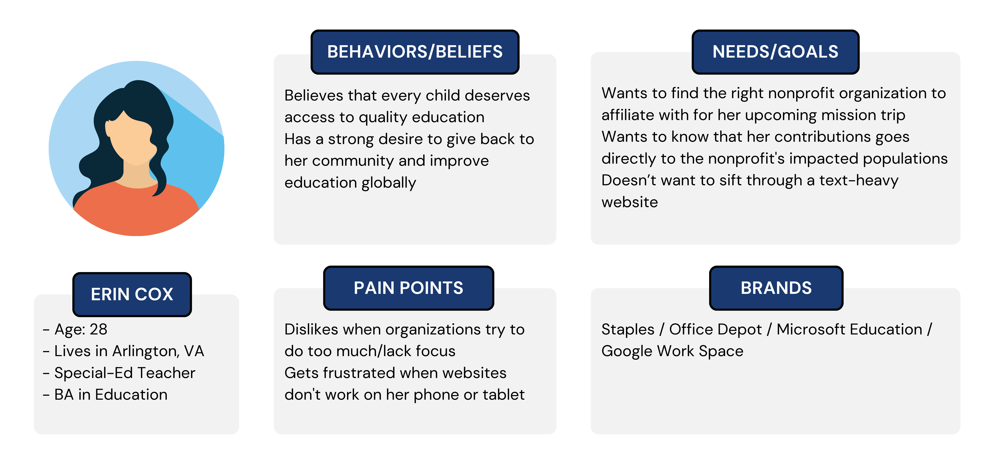

ELEVATE GUATEMALA
We conducted an expansive review, analysis, and redesign of the Elévate Guatemala website to make it a more effective tool for expanding awareness and donor response. These improvements will aid the nonprofit in achieving its goals of increasing access to education in underserved regions.
THE PROBLEM
Elévate Guatemala’s website is sometimes difficult to navigate, and large amounts of text with no breaks make learning about the organization’s work challenging to digest.
THE SOLUTION
Redesign Elévate Guatemala’s website, focusing on ease of navigation and bite-sized information.
.01 RESEARCH
-

PROTO-PERSONA
We began with a simple assumption of who would primarily be accessing the Elévate site and their motives for looking out for this information. The proto-persona gave us a template to ask questions and research to prove or disprove attributes.
-
COMPETITOR ANALYSIS
Taking time out to research how other organizations operate gave us excellent context for the space in which these nonprofits exist. Looking at these sites analytically lets us see what worked and what was confusing.

-
USER INTERVIEWS
We began with a simple assumption of who would primarily be accessing the Elévate site and their motives for looking out for this information. The proto-persona gave us a template to ask questions and research to prove or disprove attributes.
-
STAKEHOLDER INTERVIEW
Our initial contract with Elévate Guatemala stakeholder helped us identified the following key notes:
- Elevate's mission goes beyond providing scholarships; it is dedicated to nurturing well-rounded individuals.
- Concerns about website navigation and the navigation bar. Feels the site's content is outdated.
- The stakeholders expressed a desire to improve the visibility of the newsletter and to improve the clarity of the volunteer section on the website.
-
WEBSITE ANNOTATIONS
Our initial contract with Elévate Guatemala stakeholder helped us identified the following key notes:
PROBLEM STATEMENT
How might we redesign Elévate’s website to present Program and Scholarship information in a clear, easily digestible format that empowers passionate individuals interested in supporting education in developing nations, ultimately increasing user engagement confidence and driving more donations to the organization?
.02 DEFINITION
-
KEY USER INSIGHTS
Initial Impression and Design
Users generally find the website visually appealing and user-friendly. They appreciate the simplicity and clarity. Most like the logo but mention that it might be too big, and they find the mission statement to the point.
Navigation and Ease of Finding Information
Users find the navigation intuitive but need clarity to locate the critical sections, such as donation options, projects, and contact information, without difficulty.
Engaging Features
Users particularly appreciate using a video as a hero image, which helps convey the mission. However, some users think the video is too long, suggesting a need for a shorter version or clear video navigation options.
-
AFFINITY DIAGRAM
-
USER INSIGHT
The user must access Elévate’s Programs and Scholarships page to decide where and how to donate. Currently, users are confused by the website layout, limiting their engagement and willingness to contribute.
-
PROBLEM STATTEMENT
How might we redesign Elévate’s website to present Program and Scholarship information in a clear, easily digestible format that empowers passionate individuals interested in supporting education in developing nations, ultimately increasing user engagement confidence and driving more donations to the organization?
-
USER JOURNEY MAP
-
USER PERSONA
Gathering and defining these insights and viewing them through our problem statement allowed us to understand better who our user is, our User Persona.
-
UX HYPOTHESIS
Updating our outdated website to enable the purchase of tangible goods and prominently featuring volunteer opportunities will enhance user engagement, increasing donations and volunteer sign-ups.
-
VALUE PROPOSITION
Elévate Guatemala provides access to quality education, literacy programs, and diverse, enriching experiences, transforming young lives and opening doors to brighter futures. Your support creates opportunities and broadens horizons, helping us build a more educated, skilled, and empowered generation in Guatemala.
.03 IDEATE
-
SKETCHES
Initial Impression and Design
Users generally find the website visually appealing and user-friendly. They appreciate the simplicity and clarity. Most like the logo but mention that it might be too big, and they find the mission statement to the point.
Navigation and Ease of Finding Information
Users find the navigation intuitive but need clarity to locate the critical sections, such as donation options, projects, and contact information, without difficulty.
Engaging Features
Users particularly appreciate using a video as a hero image, which helps convey the mission. However, some users think the video is too long, suggesting a need for a shorter version or clear video navigation options.
-
CARD SORTING & SITE MAP
-
USER FLOW
The user must access Elévate’s Programs and Scholarships page to decide where and how to donate. Currently, users are confused by the website layout, limiting their engagement and willingness to contribute.